RECENT
4月。チューリップの咲き誇り時期にアムステルダムのキューケンホフ公園に行った。ヨーロッパ有数のチューリップ生産国であるオランダは……
どこまでも青い海が広がっているクロアチア、ドブロブニク。魔女の宅急便のキキが訪れた街のモデルとしても有名で……
ドイツ北西部に位置するケルン。ここにあるケルン大聖堂はヨーロッパでも屈指の規模であり、ケルン中央駅で下車すると……
サンタさんとトナカイさんに会ってきた。じんぐるべーるじんぐるべーる鈴がなる～～～
フランスのパリ郊外にあるベルサイユ宮殿。日本ではベルサイユのばらの舞台としても有名だろう。オスカル様～～
岐阜県飛騨地方に位置する高山市。ここで開催される手筒花火の迫力は見るものを圧倒する。……
イギリスの首都ロンドン。古き良きイギリスも金融を中心として世界を牽引する最先端のオフィスもこの街に集結している。……
フランスの港町マルセイユ。都市部から少し離れた国立公園では白い岩々に囲まれた秘密の海水浴場があった！！
世界遺産にも登録されている白川郷。合掌造りを囲む田んぼの緑とヒマワリの黄色のコントラストが美しい。……


 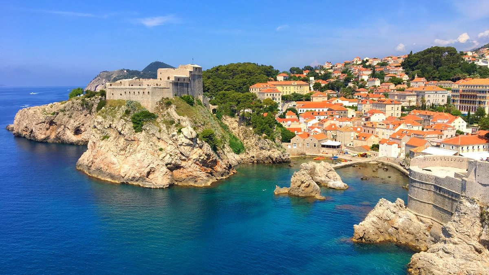
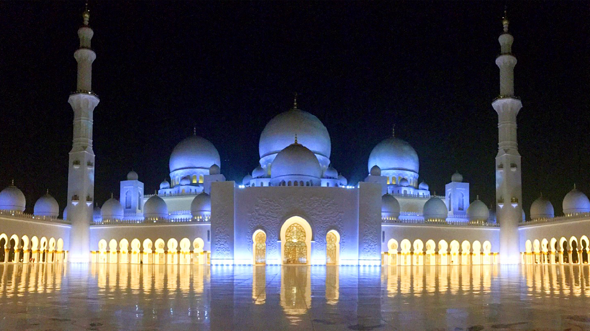
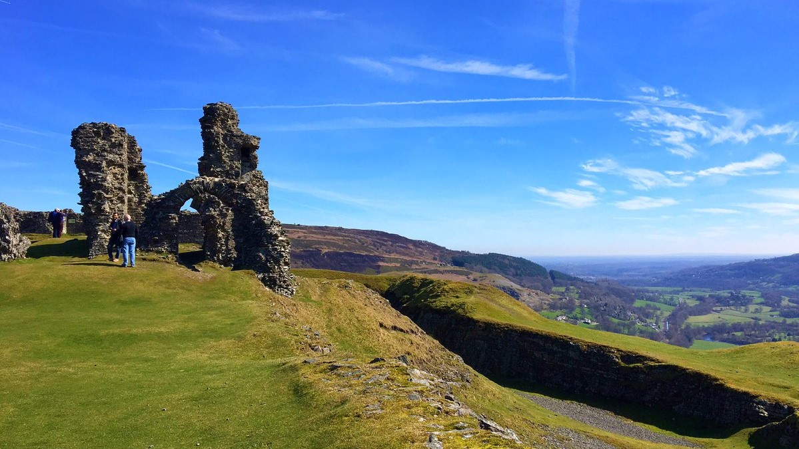
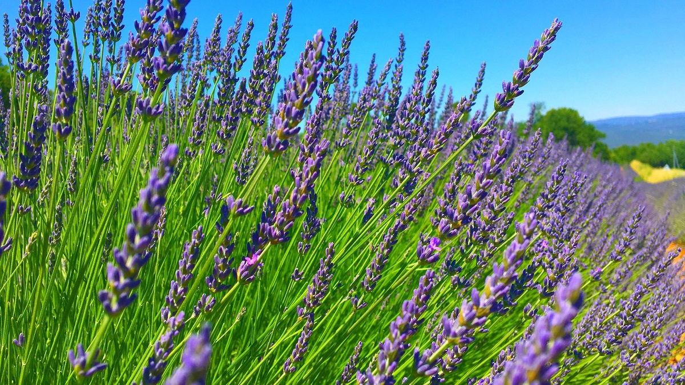
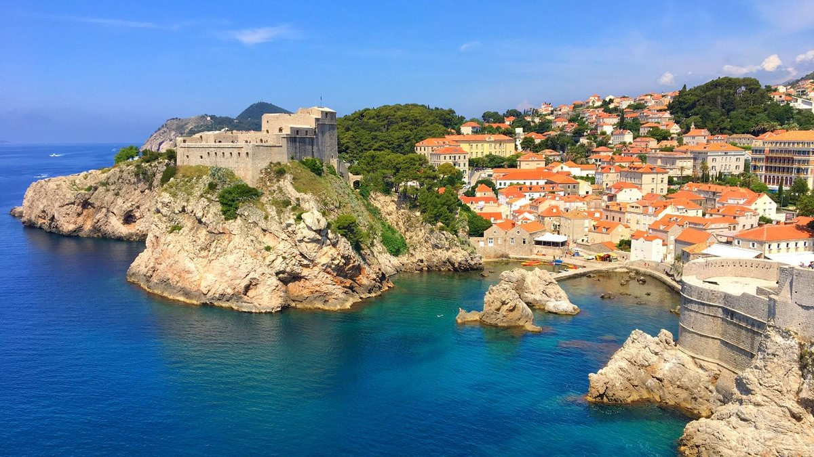
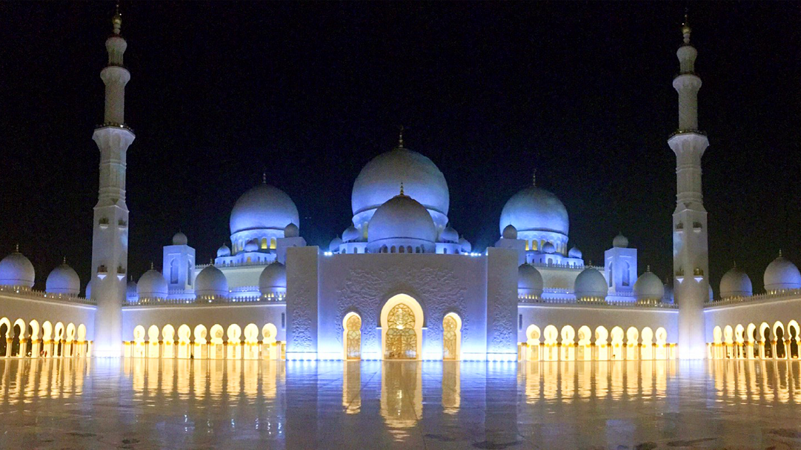
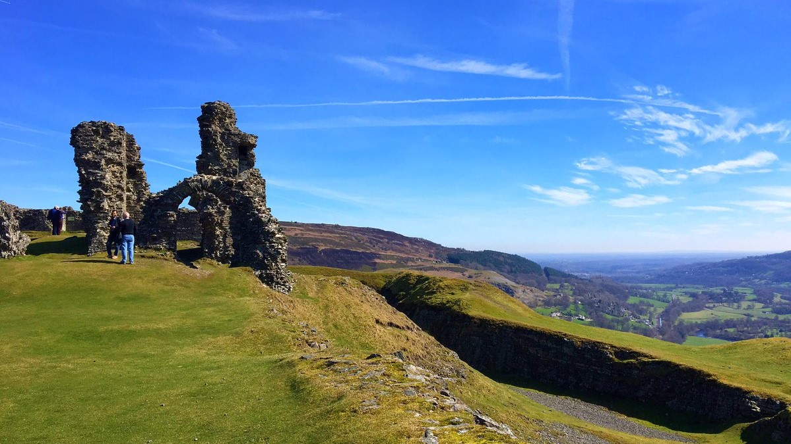
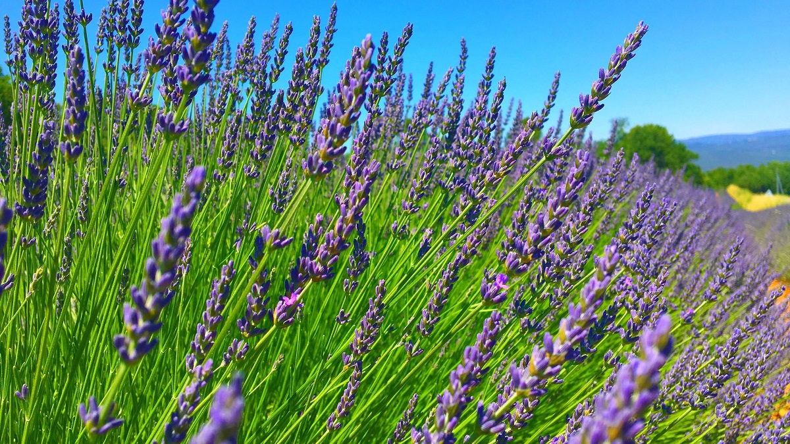
 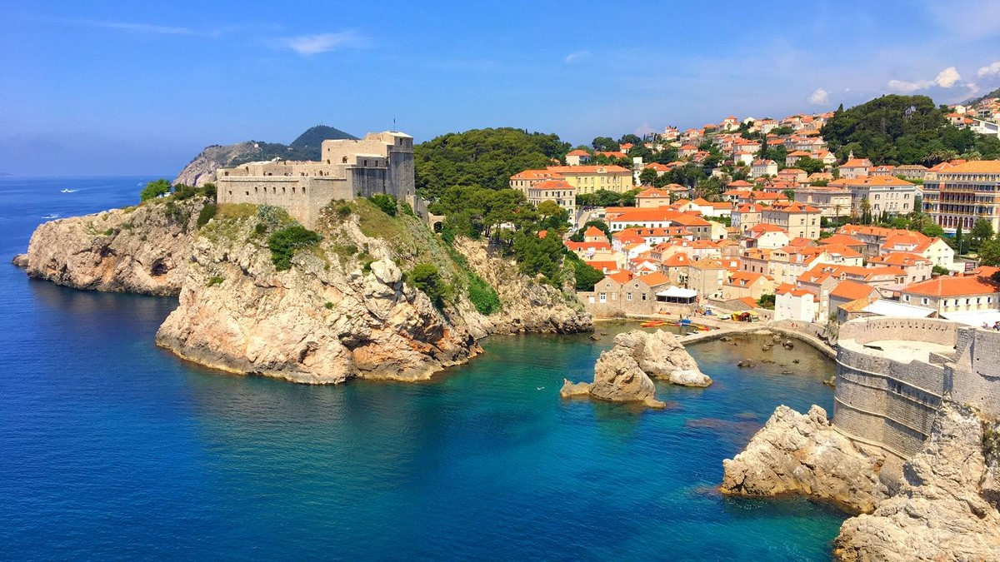
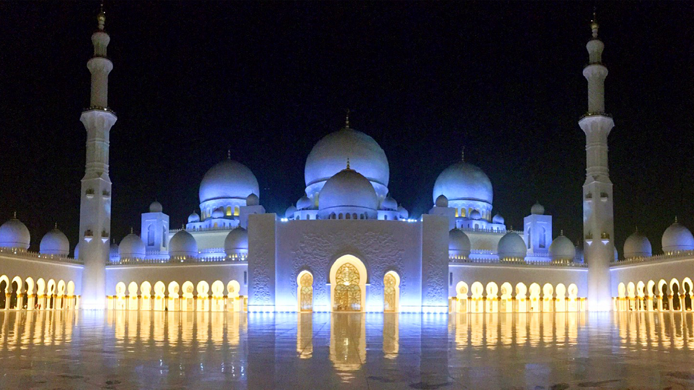
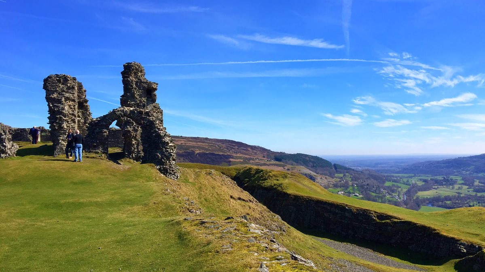
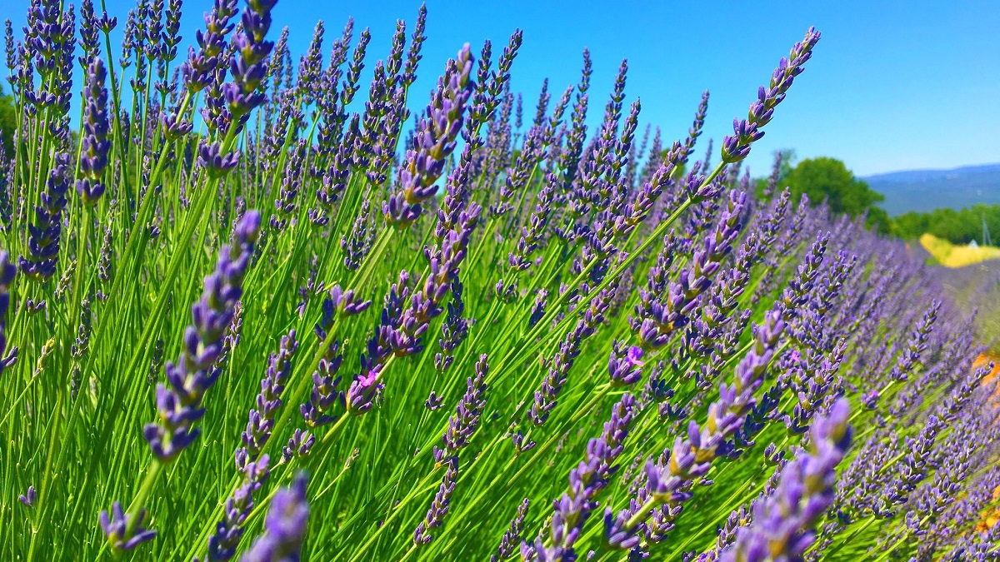
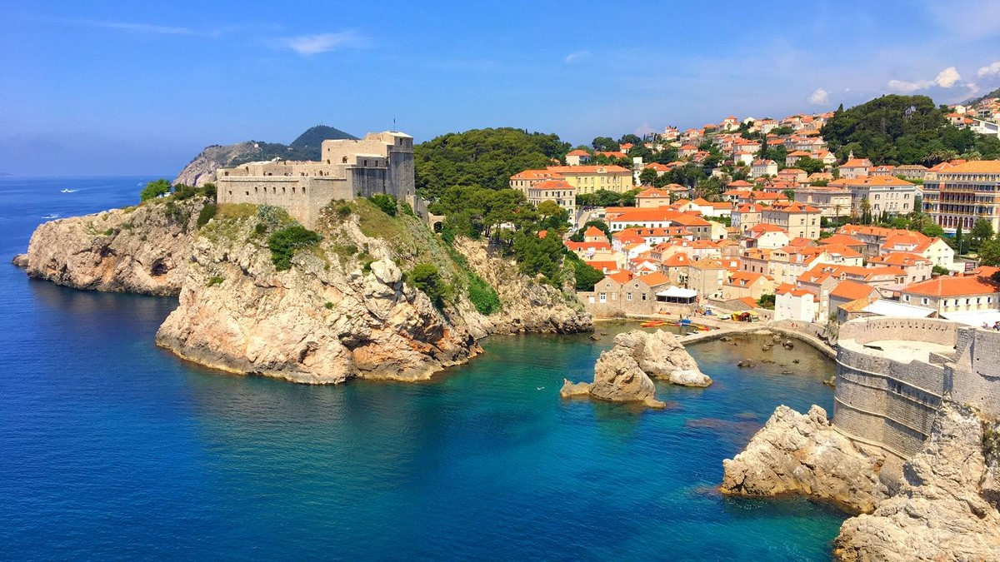
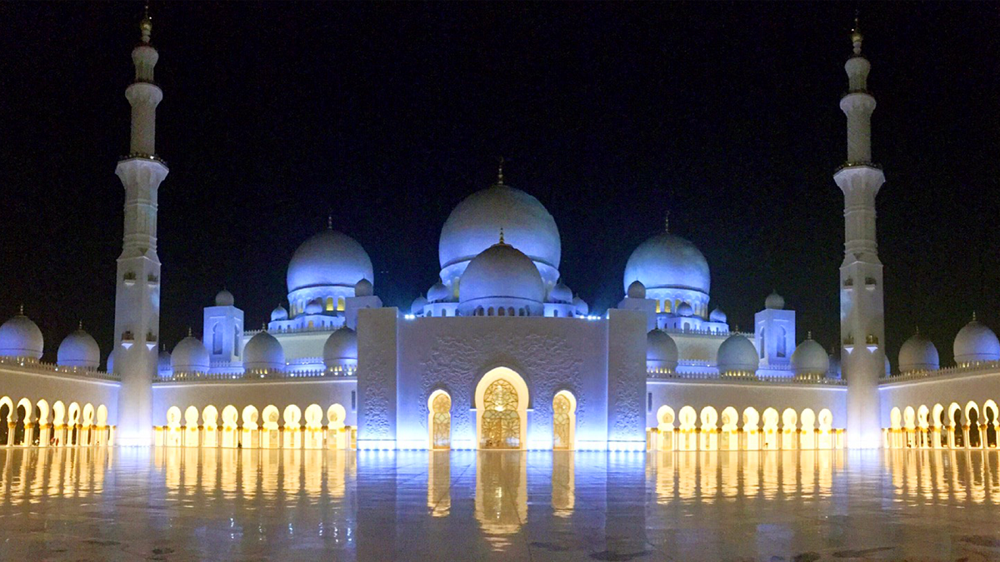
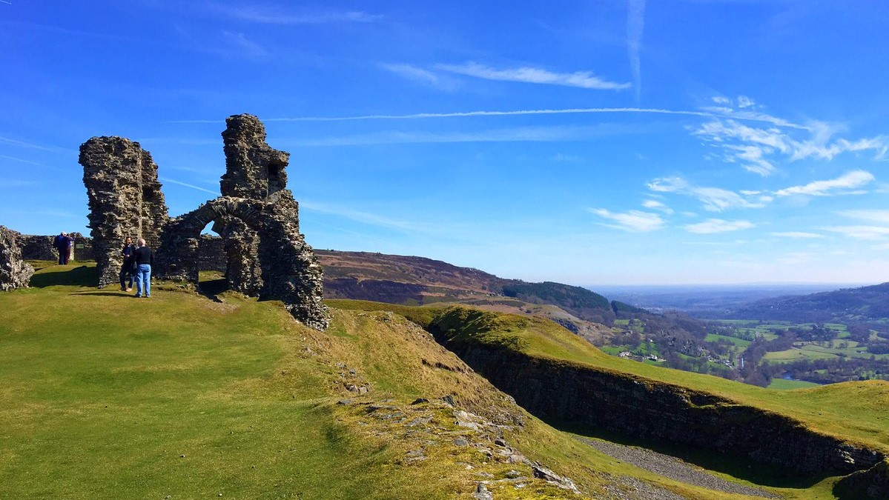
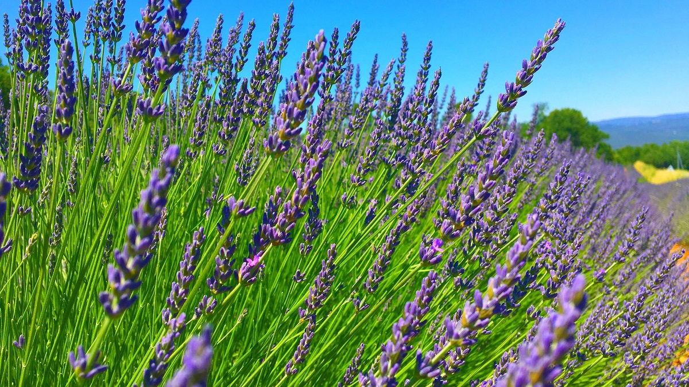